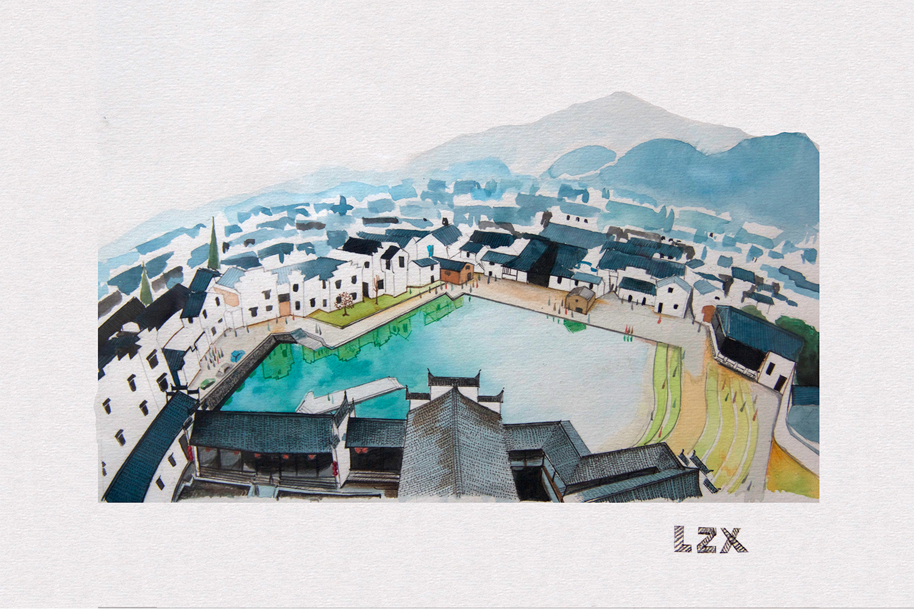

Fuchun
Description: a group of paintings themed "Fuchun"
Tools: pencil, watercolor
Overview
Fuyang, which is my hometown, is a beautiful district under the jurisdiction of Hangzhou, the provincial captial of Zhejiang. It is located in the northwest of Zhejiang on the Fuchun River, a tributary of Qiantang River. I decide to paint a group of paintings about my hometown. And as she is famous for the Fuchun River, so I theme them "Fuchun".
View it

-2-
-3-
Some processes: